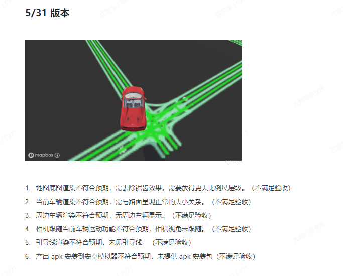

图二
图三
第二个罪名：然后列举出我曾经在一个项目列表页数据命名中使用fXXk作为前缀，说我暗地里侮辱别人验收人员，非常不礼貌；因为实在是找不到合适的规章制度或者其他法律上的帽子扣给我，两人也就没有过多纠缠此事；也可能是当时直接领导世华并没有像上面的罪证那样及时截图吧，这个事情我表示很无语；我做前端页面的时候把背景颜色设置成黄色，你是不是要说我搞黄色？！；话说回来了，别人当事人是一个五大三粗的精壮汉子，别人都没有直接表示什么异议，要你们过来给别人打抱不平啊；何况当时别人早就已经离职了，你们还非要强行为别人伸冤。我想对你们仨人说一句：“你们人还怪好嘞”
然后陈an X告诉我，在她的能力范畴内，一定会尽力在公司那里为我争取，然后转脸告诉我，现在给我的是N+0.5 是在这个房间里面她给我的条件，出了了这个屋子连这个都没有了（题外话：当时的霸道女总裁语气，立马震慑到了我；不过她的确也说到做到了，今天给我解除了劳动合同，的确一分钱的赔偿也没给我，给她的说到做到点个赞）；当时的谈判结果不出意外，被我果断拒绝了；
说到这里大家也都意识到了，说好的调岗和培训安排或者解除劳动合同，怎么只有接触劳动合同的内容，因为整个谈话的内容的确大多数只有解除劳动合同。所以人事的真实目的到底是啥不言而喻哈；
最后我我问调岗呢，他们说目前没有收到我这个岗位的招聘需求，只有安排我在目前的目前的部门做其他工作；（题外话：我是做Web端渲染的WebGL开发，地图展示类的都可以开发；渲染作为和定位搜索导航并列为GIS的四大领域，我们的业务重度依赖于GIS，所以兄弟们你们真的不需要渲染岗位吗？！大家心里自然有数）；
看就是说在目前的部门做其他的工作，需要先给我进行培训，然后依据培训效果进行评估具体降薪多少；因为我不同意解除合同的赔偿方案，让人力重新考虑下，结束谈话；
谈话结束后，人力副总监孙jian X和陈an X分别出招了，一个发培训通知（见图四），一个发劳动违纪告知书（见图二，图三）；家人们谁懂啊，大周五快下班给我发邮件，当然了，我顺利的没看见，6.2 周一一上班就和我交流培训的事情；
图四
整个撕X行为持续时间很久；简单说一下就是发了两个站不住脚的培训通知；我在钉钉依次进行了反驳
图五
图六
图七
图八
对于人力副总监孙jian X的操作，我不进行道德判断；仅仅对其业务能力，以及违法操作进行指出；首先对于第一次的培训通知中：
第一：擅自捏造我工作影响部门研发进度，影响公司进度的事实（违法），在没有调查我实际工作内容的情况下，诬陷我工作没有按照进度完成；大家都知道作为“PPT之王”的世华，在每次部门汇报都堪称完美，最近没有一次出现工作延误，这是大家都知道的事实，毕竟我们每周二都要开全体会议，大家的工作进度都是互相知道的；整个部门都没有延误，我作为部门的一员怎么可能延误了部门甚至整个公司的研发进度；
第二：为了给我安排一个罪名，擅自将我的调研任务（如图八所示）改成了开发任务，没有调查清楚我工作内容的情况下，擅自给我的工作定性，我5月从事的是调研工作，，根本不存在开发内容，我的产出是调研结果：“unity是否适合满足我们的要求，满足到什么程度”；结果莫名其妙就成了开发任务，又一个捏造事实的操作；
第三： 发出培训公告的工作流程不规范，在没有和我沟通需要什么培训的情况下，身体情况是否适合培训，也么没有沟通培训时间，培训地点的情况下；就直接将我安排出差培训；显而易见安排培训就是幌子，为难我才是目的；当然了这个是显而易见的，大家都懂；问题是我对你的培训通知合理合法性提出异议，你完全拒绝和我沟通此事；
第四： 在没有和我进行协商的情况下，捏造协商未达成一致的事实：在当面沟通协商未达成一致的情况下，本人又在钉钉和陈an X沟通了关于调岗的事情，陈an X完全没有对我的回复进行答复，人力部门其他人也没有对我的调岗作出回应；就擅自捏造伪造了协商未达成一致的事实；
第五： 说我不参加培训以次作为解除劳动合同的依据，上面已经阐述；
第六：在我忘记打卡的情况下（后面会详细阐述为何忘记打卡），填写了错误的补卡时间后，作为我考勤作假的依据；首先世华认真核实事实的态度，很值得大家肯定，（大家见下图）；然后我们回到考勤作假的事实上哈；
图九图十图十一
首先我自己不知道自己几点上班，因为头一天干活到凌晨1点半，有点恍惚，到了下午才发现这个忘记打卡，补个卡很正常吧；我没法核实时间，而且我按照平时上班时间上班，没有特殊状况，写个9：00很合理吧，结果人力部门监控显示9:10进门，也证明了我的感觉是对的；ok感觉是没法代表事实的，我开门来看看事实；你要说我9；00 打卡你查出来了是9：10进来的，我也认我考勤造假，问题是现在我申请9：00 打卡，你驳回拒绝了我，所以我的打卡时间是下午，怎么说你呢，自以为很聪明；
还有请你扣帽子前认真研究条款，不要研究关键字，看见考勤就是造假，看见白胳膊就是裸体；就算退一万步，我的记录因为被你驳回了我的记录是真的，不是假的；更不是别人代打卡或者技术手段造假的
图十二
图十三
第七：公然践踏法律，就算是协商解除劳动合同，你也要赔偿N+1，结果你来一个违法还不赔偿的方案，采用增加维权成本的方式，降低公司成本，你选择了一个丢掉道德甚至法律底线的低成本的方案，当然这是目前这个劳动法领域违法成本较低的原因，可能你也低估了我维权的决心，导致后面公司利益受损，作为一个人力老司机真的属于lock of judgement；
第八：对于绩效为C的结果，本人至今有异议且未承认该结果，见最上附图；
综上：整个培训通知，以及解除劳动合同的依据完全是无稽之谈；
顺便我说一句哈，你整个的操作都是在赌我不懂劳动法，让我自己受不了走是吧，拜托你提升下自身业务能力，好好学习学习法律，看看什么情况下才能不赔偿！
这就是大有人力副总监的业务能力水平嘛？！
图十四
关于人力部门的操作我们就阐述到这里，接下来说一下世华对于整件事的神助攻哈：
因为公司着急忙慌得限制权限，没有像孙jian X那样完整得聊天记录截图，我们就欣赏一下世华精彩事迹以及金句片段吧
第一： 关于孙jian X和陈an X说我在群里和人谩骂，世华你为什么只把我和L某交上去啊，是什么事情，让你怀恨在心？对和我在群里互骂的C某，你却闭口不提，因为是你自己推荐进来的所以忽略了？然后你为什么不把我,L某，C某，Z某某，四人在群里互骂的事情交代了？怕别人怀疑你领导不力？提供证据的时候要一碗水端平，然后记住要坦白从宽，你告密还真的就是个告密的样子，你这样只告一部分得秘密的操作真的很猥琐；
第二：本来5月我做的是调研见图十四，我给你的工作成果应该是一个调研报告把，以及与之对应的调研效果吧，就算是我的调研效果达不到要求，也是调研文件不行；你觉得调研的结果不行可以说重新调研，而不是调研要求不达标；你懂不懂调研和开发的区别啊，来我们看一下世华怎么将一个调研搞成产品验收；逻辑是产品和调研都为了推进项目，所以时间点要确定，绝口不提验收标准从调研报告变成开发效果验收的事情；

第三： 作为一个从技术升上去的管理人员，提出“一句话需求”以及“无法量化的验收标准”；甚至用上了参考某某视频效果这样的需求；能搞出这样的事情，只有两种可能，要么是你水品不行，不懂如何提需求，要么是你故意提出无法量化的指标，后期故意曲解标准刁难人；毕竟具体做什么，我们5.6 号已经口头约定了，之所以我们会在群里扣细节，就是因为之前的口头标准都被沈shi X你修改了；
.jpg)